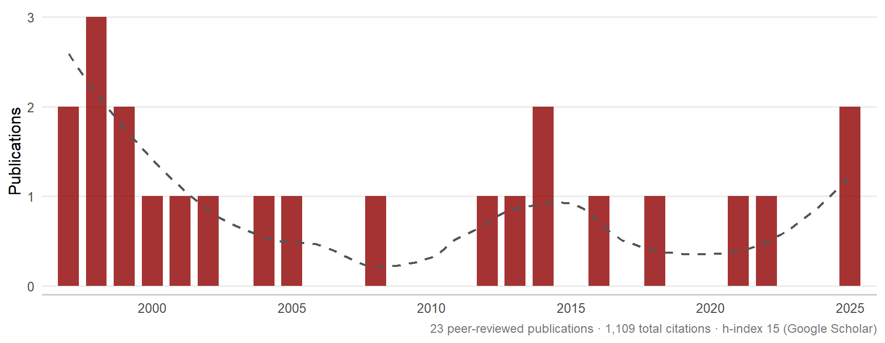

Research
Publications & Scholarly Activity · John Paul Broussard
Publication Activity
Google Scholar
·
1,109 total citations
·
267 since 2021
·
h-index 15 (7 since 2021)
·
i10-index 16 (6 since 2021)
·
View full profile →
Peer-Reviewed Publications
2025
Stablecoin market growth and sensitivity to interbank lending rates: Projections for wholesale CBDC adoption2 citations
Journal of Digital Economy
2025
The Market Ecosystem in the Age of Algorithms: Analysis of Trading Dynamics and Market Quality1 citations
Journal of Economics and Finance
2022
Time-variation of Dual-class Premia
Nordic Journal of Business, v71, n1, 26-50
2021
Modeling Flash Crash Behavior in a Stock Market Using Multivariate Hawkes Processes
Journal of Economic Interaction and Coordination
2018
The Efficacy of Life Insurance Company General Account Equity Asset Allocations: A Safety-First Perspective Using Vine Copulas
Annals of Actuarial Science, v12 n2, 372-390
2016
2014
Communication Technology and Exchanging of Financial Assets: A Historical Perspective1 citations
Business and Economic Research, v4 n2, 308-322
2014
Intraday Periodicity in Algorithmic Trading15 citations
Journal of International Financial Markets, Institutions, and Money, v30, 196-204
2013
Is There Price Discovery in Equity Options157 citations
Journal of Financial Economics, v107 n2, 259-283
2012
Profitability of Pairs Trading Strategy in an Illiquid Market with Multiple Share Classes44 citations
Journal of International Financial Markets, Institutions, and Money, v22, n5, 1188-1201
2008
Saving for Retirement: The Effects of Fund Assortment Size and Investor Knowledge of Asset Allocation Strategies
Journal of Consumer Affairs, v42 n2, 206-222
2005
The Role of Growth in Long Term Investment Returns8 citations
Journal of Applied Business Research, v21 n1, 93-104
2004
2002
The Role of REITs in Asset Allocation
Finance, v23, 109-124
2001
Extreme-Value and Margin Setting with and without Price Limits20 citations
Quarterly Review of Economics and Finance, v41, 365-385
2000
Testing the Contrarian Investment Strategy Using Holding Period Returns4 citations
Managerial Finance, v26 n6, 16-22
1999
Reply to Note on Earnings and Stock Returns: Evidence from Germany
The European Accounting Review, v8 n3, 656-658
1999
Big Players and the Russian Ruble: Explaining Volatility Dynamics7 citations
Managerial Finance, v25 n1, 49-63
1998
Setting NYSE Circuit Breaker Triggers8 citations
Journal of Financial Services Research, v13 n3, 187-204
1998
Price Discovery in German Stock and Futures Markets2 citations
Managerial Finance, v24 n4, 3-18
1998
The Behavior of Extreme Values in German Stock Index Futures: An Application to Intradaily Margin Setting31 citations
European Journal of Operational Research, v104, 393-402
1997
Earnings and Stock Returns: Evidence from Germany9 citations
The European Accounting Review, v6 n4, 589-603
1997
Prudent Margin Levels in the Finnish Stock Index Futures Market44 citations
Management Science, v43 n8, 1177-1188
Other Publications & Book Chapters
2016
The Sortino Ratio and the Generalized Pareto Distribution: An Application to Asset Allocation
Wiley Handbook of Financial Engineering and Econometrics: Extreme Value Theory and its Application to Finance and Insurance: Chapter edited by Francois Longin, Wiley Publishing
2009
The Competition of Systems for the Market for Listings
Economic Law as an Economic Good, edited by Karl M. Meesen, Chapter 3, 167-185, Sellier, European Law Publishers
2003
Bank Stock Returns, Interest Rate Changes and the Regulatory Environment: New Insights from Japan
The Japanese Finance: Corporate Finance and Capital Markets in Changing Japan: International Finance Review, v4, edited by J. H. Choe and T. Hiraki, Elsevier Science
2002
Using SAS in Financial and Accounting Research
Books By Users: SAS Press
2002
The Relationship between Economic Freedom and Transitionary Economic Growth
Economics and Transition: Conception, Status, and Prospects: edited by A. Young, I. Teodorovic, P. Koveos, World Scientific Publishing Co. Ltd.
2001
The Index of Economic Freedom and Economic Growth in Transition Economies
Globalization and Economic Growth, A Critical Evaluation: edited by T. Georgakopoulos, C. Paraskevopoulos and J. Smith in, APF Press Toronto, Canada. Reprinted in Zagreb International Reviews of Economics and Business.
2000
Governance, Economic and Financial Factors Affecting Success for Transition Economies
Proceeding of Rijeka Faculty of Economics: Journal of Economics and Business Chapters 7-18. Reprinted as Chapter 11 in Economics and Transition: Conception, Status, and Prospects, edited by A. Young, I. Teodorovic, P. Koveos, World Scientific Publishing Co. Ltd.
1995
Porssikriisien Todennakoisyys Kasvanut (Probability of Crises and Extreme Events)
Talouselama (Finnish Economic Life)
1994
German Stock Returns and the Information Content of DVFA Earnings
Deutsche Vereinigung fur Finanzanalyse
Working Papers
Five papers currently in progress across financial modeling, behavioral finance, and empirical accounting.